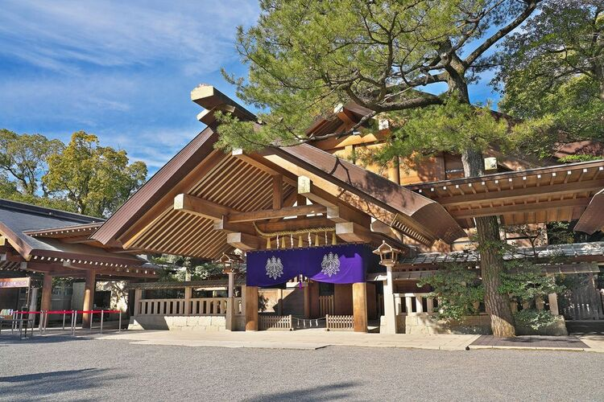
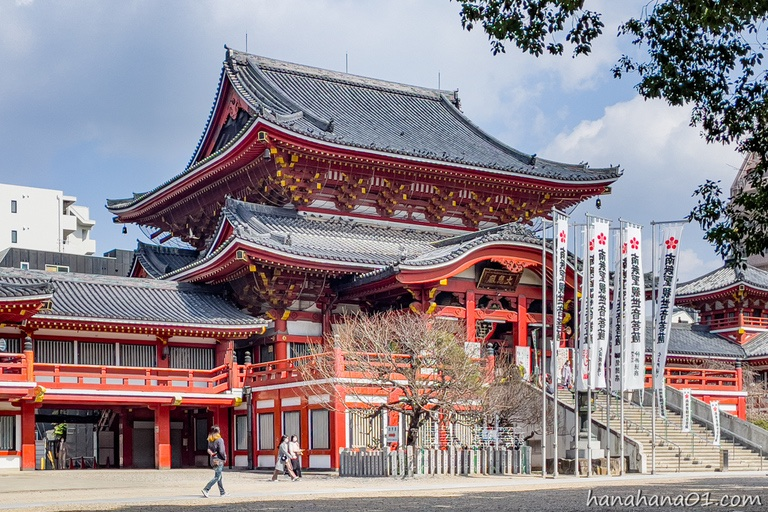
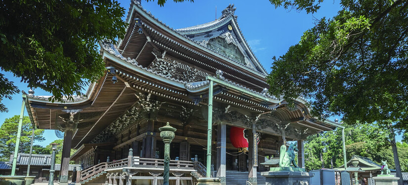

熱田神宮

熱田神宮は、約1900年の歴史を持つ愛知県を代表する神社。
三種の神器の一つである「草薙神剣」を祀っていることで知られている。
全国から多くの参拝者が訪れる。
境内は緑豊かで、歴史を感じながらゆったりと散策を楽しむことができる。
大須観音

大須観音は、正式名称を「真福寺宝生院」という歴史ある寺院。
学業成就や家内安全などのご利益があるとされ、多くの参拝者が訪れる。
隣接する大須商店街には飲食店や雑貨店が数多く並び、
観光や食べ歩きを楽しめる名古屋の人気スポット。
豊川稲荷

豊川稲荷は、正式には「妙厳寺」という曹洞宗の寺院で、
日本三大稲荷の一つとして知られている。
商売繁盛や家内安全の後利益を求めて全国から多くの参拝者が訪れる。
境内には数多くの狐像が並ぶ「霊狐塚」があり、
豊川稲荷を代表する見どころとなっている。